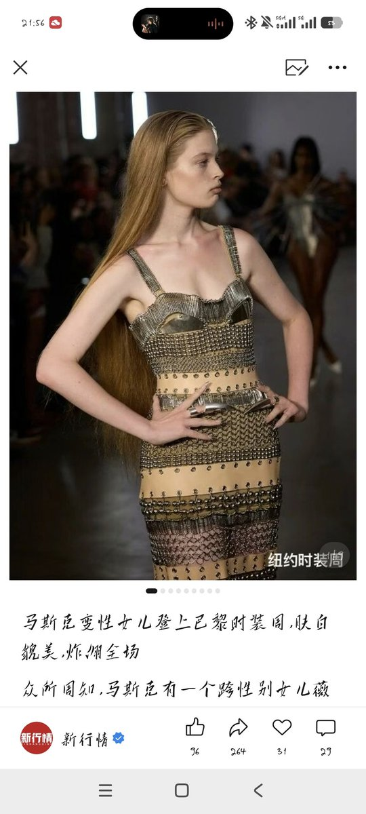
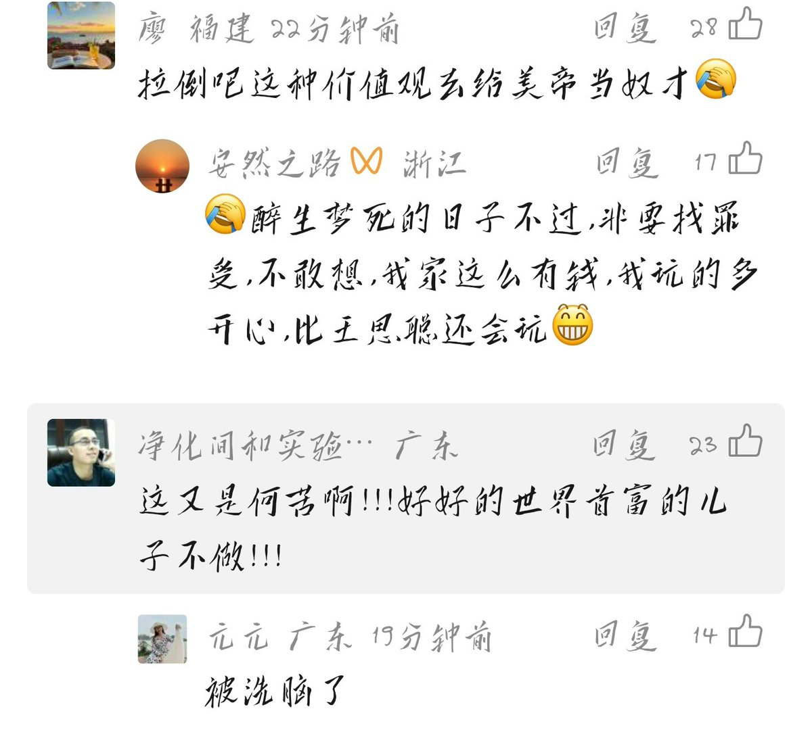

@Lian_8964tank 确实招笑



最招笑的一集之替masike女儿惋惜
这种人无法理解一个人为了追求真实的自我，宁愿放弃特权和财富。这恰恰说明，masike的女儿Vivian在精神上比这些人独立得多
薇薇安选择断绝父女关系并改名，正是为了摆脱masike那种带有极右翼色彩的家庭价值观。
完全支持vivian与其反动的纳粹法西斯生物学父亲断绝关系 https://t.co/IkuUinCt9h
这种人无法理解一个人为了追求真实的自我，宁愿放弃特权和财富。这恰恰说明，masike的女儿Vivian在精神上比这些人独立得多
薇薇安选择断绝父女关系并改名，正是为了摆脱masike那种带有极右翼色彩的家庭价值观。
完全支持vivian与其反动的纳粹法西斯生物学父亲断绝关系 https://t.co/IkuUinCt9h